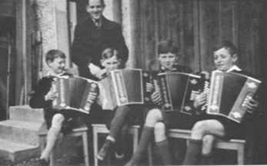
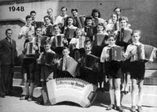

|
||
ChronikDie ersten Aktiven der Harmonika-Freunde Konstanz: Arthur Trummer, Herbert Hetzel, Karl Greis, Harry Marschall und Ernst Honsel In den 30er Jahren war ein merklicher Aufschwung in der Harmonikabewegung zu beobachten. In Konstanz war Musiklehrer Arthur Trummer der Initiator für die Harmonikamusik. Die ersten Schüler der Harmonikaschule Arthur Trummer waren Herbert Hetzel, Karl Greis, Harry Marschall und Ernst Honsel. Sie waren gleichzeitig die ersten Aktiven der Harmonika-Freunde. Aus diesen Anfängen entstand im Jahre 1937 unser Verein - die Harmonika-Freunde Konstanz. Die Spieler fanden in der Harmonikaschule Arthur Trummer eine fundierte Ausbildung, so daß sehr bald ein größeres Interesse am Harmonikaspiel in der Gruppe entstand und die ersten Konzerte stattfinden konnten. Mit dem Harmonikaclub-Radolfzell und unserem damaligen Patenverein Markdorf, die beide von Musiklehrer Arthur Trummer geleitet wurden, fanden große Doppelkonzerte mit reger, aktiver Beteiligung von über 50 Spielern statt. So wurde die Harmonikamusik schnell ein Begriff in der Bevölkerung. Von den Gründungsmitgliedern ist heute nur noch der Ehrenvorstand Karl Greis in unseren Reihen. Leider verstarb im April 1999 unser Ehrendirigent Arthur Trummer nach langer. Krankheit. Von den ersten Aktiven ist heute nur noch Harry Marschall in unseren Reihen. Durch den 2. Weltkrieg wurde dieses schöne musikalische Wirken jäh unterbrochen.  Ein neuer Beginn der Harmonika-Freunde erfolgte durch die Initiative von Karl Greis, der 1948 den Verein nach Kriegsende wieder aufleben ließ. Er übernahm die Führung des Vereins als l. Vorstand und hatte in dem inzwischen aus der Gefangenschaft zurückgekehrten Dirigenten Arthur Trummer die besten Voraussetzungen für einen Neubeginn. Interessenten können den damals niedergeschriebenen Gründerbrief hier nachlesen. Seit 1952 gehören die Harmonika-Freunde Konstanz zu den Konstanzer Vereinen, die traditionell zur alljährlichen Gestaltung der Stadtgartenkonzerte beitragen. Die immer gut besuchten Stadtgartenkonzerte beweisen, wie beliebt die Akkordeonmusik bei der hiesigen Bevölkerung und den Feriengästen ist. Die Harmonika-Freunde wirkten auch bei den vom Südwestfunk durchgeführten Hafenkonzerten mit. Ebenso wurden Rundfunkaufnahmen mit unserem Orchester gemacht. Bedingt durch den enormen Zuwachs an aktiven Schülern und Spielern konnte unser Dirigent Arthur Trummer nicht mehr alle Orchester leiten. Er übergab deshalb 1972 das große Orchester an den aktiven Spieler Manfred Pfeiffer. Dieser setzte die wertvolle Aufbauarbeit von Arthur Trummer fort und hat in seiner über 10-jährigen Arbeit viel für den Verein geleistet. Anläßlich des Dirigentenwechsels wurde Arthur Trummer zum Ehrendirigenten der Harmonika-Freunde ernannt. Viele aktive Musiker, die aus seiner Musikschule hervorgingen, sahen in ihm ihren musikalischen Vater. Sogar im hohen Alter von 73 Jahren war er noch als Musiklehrer tätig. Die Jahreshauptversammlung 1974 wählte Roland Schmidt als Nachfolger von Karl Greis, der im gleichen Jahr zum Ehrenvorstand ernannt wurde. Karl Greis ist nach wie vor eng mit den Harmonika-Freunden verbunden. In den folgenden Jahren setzte sich Roland Schmidt unermüdlich für die Belange der Harmonika-Freunde ein. Neben der «normalen Vereinsarbeit» verschrieb er sich mit viel Engagement der Jugendförderung und leitete selbst zwei Orchester (Schüler- und Jugendorchester). In seine Amtszeit viel auch das 40jährige Jubiläum. Zu diesem Zeitpunkt bestand der Verein aus nahezu 250 passiven Mitgliedern und über 120 aktiven Spielern, die nach Leistungsstufen in vier Orchester eingeteilt waren.. Die intensive Jugendarbeit des Vereins blieb nicht ohne Erfolg: das Jugendorchester erspielte den Titel Bezirksmeister des Bodenseekreises in der Juniorenoberstufe, den Ehrenpreis des Bayerischen Harmonika-Verbandes und über die Landesgrenzen hinaus beim Harmonika-Musikfest in Winterthur. das Prädikat vorzüglich. 1984 trat Roland Schmidt von seinem Amt als l. Vorstand zurück. Als Dirigent des Schüler und Jugendorchesters stand er dem Verein aber weiterhin zur Verfügung. Die Jahreshauptversammlung 1984 wählte das langjährige Orchestermitglied Karl-Heinz Weidele einstimmig zu seinem Nachfolger. In dieser Funktion ist er auch heute, nach 13 Jahren Amtszeit noch tätig. Geburtenschwache Jahrgänge und der Trend zu elektronischen Instrumenten gingen auch an den Harmonika-Freunden nicht spurlos vorüber. Dies führte zur Reduzierung der Spielerzahlen in den Orchestern. Sehr früh erkannte Roland Schmidt den Trend und versuchte gegenzusteuern. Eine Lösungsmöglichkeit für das alle Konstanzer Akkordeonvereine betreffende Problem, sah er in der neugegründeten Musikschule. Zusammen mit Karl-Heinz Weidele bemühte er sich intensiv in Gesprächen mit den Verantwortlichen der Musikschule Konstanz die Aufnahme des Unterrichtsfaches Akkordeon zu erreichen. Durch Vermittlung von Roland Schmidt und Karl-Heinz Weidele konnte dann Diplommusiklehrer Alfred Stoppel gewonnen werden. Ein wichtiges Ziel von Karl-Heinz Weidele war es, die Harmonika-Freunde in einen eingetragenen Verein umzuwandeln und damit für die Zukunft mit der richtigen Rechtsform die Weichen zu stellen. In einer kleinen Kommission schufen Karl-Heinz Weidele, Klaus Kledt und Klaus Ziefle die Voraussetzungen, um die neue Satzung, die Jugendordnung und die Geschäftsordnung dem Vorstand und der Mitgliedschaft zur Abstimmung unterbreiten zu können. Am 30. September 1992 fand die Mitgliederversammlung statt in der über die Jugendordnung und Satzung einstimmig abgestimmt wurde. Die Eintragung ins Vereinsregister beim Amtsgericht Konstanz wurde von Karl-Heinz Weidele umgehend beantragt. Am 6. November 1992 erfolgte die Veröffentlichung im Südkurier. Seit diesem Zeitpunkt sind die Harmonika-Freunde Konstanz ein eingetragener Verein. Im Jahre 2000 gab Karl-Heinz Weidele nach 16 Jahren den Führungsstab ab und die Mitgliederversammlung wählte Peter Kleibert zum 1. Vorsitzenden. Nach 4 Jahren im Amt wurde 2004 Jörg Kuchenbecker als Nachfolger gewählt. In seinen insgesamt 6 Jahren als 1. Vorsitzender konnte Jörg positive Akzente für die Harmonika-Freunde setzen. So gelang es ihm in Verhandlungen mit der Stadt Konstanz die Zuschüsse zu verbessern, auch ging in dieser Zeit ein bereits von Karl-Heinz Weidele lang gehegter Traum in Erfüllung. Jörg Kuchenbecker gelang es, alle drei Konstanzer Akkordeonorchester gemeinsam auf die Bühne zu bringen. Unter dem Motto "Akkordeonorchester im Dreiklang" fand am 28. April 2007 das 1. Dreierkonzert in der Wollmatinger Halle statt. Das Konzert wurde vom Publikum begeistert aufgenommen und wurde drei Jahre später wiederholt. Die geringe Zahl an Nachwuchsspielern im Jugendorchester und der Schülerspielgruppe waren für ihn der Ansporn ein neues Konzept für die Jugendausbildung aufzubauen und damit langfristig die Basis für die Harmonika-Freunde zu erhalten. Nach intensiven Gesprächen war es im Januar 2005 so weit; mit den Grundschulen Litzelstetten und Wollmatingen konnten erste Schulkooperationen geschlossen werden. Auf diesem Weg hoffen wir neue Spieler zu gewinnen und damit den Nachwuchs für die verschiedenen Orchester zu sichern. Ein weiteres Projekt wurde in seiner Amtszeit angepackt. Gemeinsam mit Karl-Heinz Weidele untersuchte er die Möglichkeiten die Verstärkeranlage auf den neuesten Stand der Technik zu bringen. Nach sorgfältigen Abklärungen gelang es die für den Verein passende Lösung herauszufiltern. Im Jahr 2010 gab Jörg Kuchenbecker das Amt ab und die Nachfolgerin wurde die aktive Spielerin Ute Pfeiffer. Während ihrer Amtsführung wurde die neue Verstärkeranlage erstmals beim Stadtgartenkonzert sowohl beim Hauptorchester als auch beim Hobby- und Seniorenorchester eingesetzt. Die Mitgliederversammlung vom 23. März 2012 wählte im Jubiläumsjahr eine neue Vorstandschaft. Die Vorstandswahlen brachten das nachfolgende Ergebnis: 1. Vorsitzender Karl-Heinz Weidele 2. Vorsitzender Bruno Kudermann Schriftführer Hansjörg Kürschner Kassier Ulrike Irtenkauf Jugendleiter noch vakant Spielervorstand Sabine Ronecker Veranstaltungsleiter Carmen Glönkler Beisitzer Franziskus Paul Kassenprüfer Gisela Glönkler und Daniel Fritz Diese Mannschaft hat nun die Aufgabe die Harmonika-Freunde durch das 75-Jahr-Jubiläum zu führen. Die größte Herausforderung für das Gremium ist aber die Aufgabe einen neuen Dirigenten für den Verein zu finden, da der langjährige Dirigent Rainer Lehmann seinen Vertrag gekündigt hat. Rainer Lehmann ist bei den Harmonika-Freunden seit 1997 als Dirigent des Hauptorchesters tätig und seit dem Jahr 2002 obliegt ihm die musikalische Leitung aller Orchester. Als ausgebildeter Musikpädagoge übernahm er ab 2005 auch die Ausbildung der Schulkinder im Rahmen der Schulkooperation und ist damit auch für den Nachwuchs der Harmonika-Freunde zuständig. Nach 15 Jahren möchte Rainer Lehmann noch einmal neue Akzente setzen und wieder einmal freie Zeit genießen. Die Harmonika-Freunde bedanken sich bei ihm für seine tolle Arbeit, für seine Arrangements und die Themenkonzerte die uns allen in Erinnerung bleiben werden. |